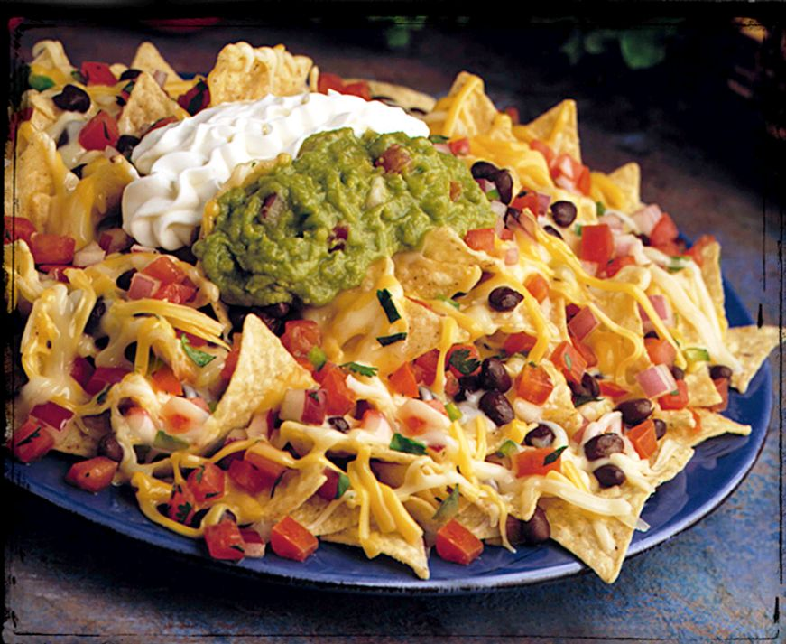

Amazing Nacho Mountain

Famous Nachos Combination
Nachos are fun for the whole family. You can customize nachos to your choosing, down to the meat, type of chip, cheese, salsa, and many other add-ons you can test for yourself! Here, we will show you our absolute favorite way to make nachos, but feel free to make it your own!
Ingredients
- 1lb chicken, beef, pork, etc.
- 1 large bag tortilla chips
- 1 can nacho cheese sauce
- 1/2 diced white onion
- 1/2 cup chopped mushrooms
- 2tbs sour cream
Steps
- Dice the onion and chop the mushrooms into smaller pieces.
- Fully cook your meat of choice.
- On stovetop, heat nacho cheese sauce on low.
- Prepare tortilla chips, and add meat, cheese and additional add-ons!
- Enjoy your delicious homemade nachos!